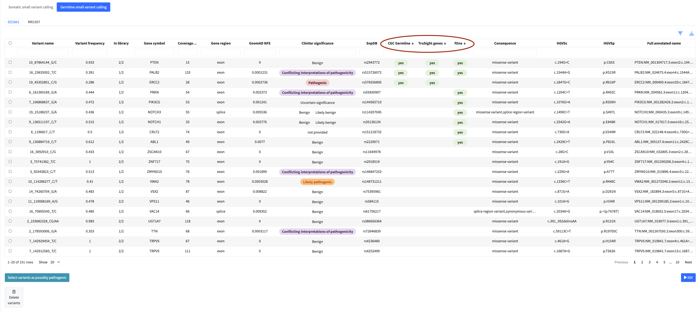

Working with Tables
All data in SeqUIaSCOPE — variants, fusions, and expression results — is displayed using
interactive tables built with the reactable package. This page describes the features
common to all tables. You do not need to read it before exploring the modules, but it is
worth coming back to if something in a table behaves unexpectedly.
Default Filters
When you first open a module, the table is not necessarily showing all available data. Each module applies a set of default filters on load to focus the view on the most clinically relevant entries and keep the application responsive with large datasets.
For somatic and germline variant calling, the default filters are the most restrictive — see Variant Calling — Default Filters for the exact criteria. For fusion gene detection and expression profile, default filters are less aggressive but the column selection in the filter menu may hide some columns by default.
If the table appears empty or unexpectedly small, check the active filters before assuming data is missing. The filter menu and the column filter inputs above each column header show what is currently applied.
Sorting
Click any column header to sort the table by that column. Clicking again reverses the order. A third click removes the sort.
Multi-column sorting is supported by holding Shift while clicking additional column
headers. This sorts first by the primary column, then by each additional column in the order
you clicked them. To remove a secondary sort, hold Shift and click the column header again
until it cycles back to unsorted.

Filtering and Column Visibility
Each column has a filter input directly below the header. Typing in a filter box narrows the table to rows matching your input in that column. Filters across multiple columns are combined — a row must satisfy all active filters to remain visible.
The filter menu (accessible via the filter icon above the table) provides additional filtering options specific to each module, as well as a column visibility selector that lets you show or hide individual columns to focus on what matters for your analysis.

Tip: Apply filters before flagging variants or fusions for the report. Working with a filtered subset significantly reduces table reload times and keeps the application responsive.
Resizing Columns
Column widths can be adjusted by dragging the border between column headers left or right. This is available in all main data tables (variants, fusions, expression).
Exporting Data
All tables can be exported using the download buttons above the table. Two export options are available:
- Export filtered — exports only the rows currently visible after applying your filters
- Export all — exports the complete dataset regardless of active filters
Supported export formats are TSV, XLSX, and CSV.

Flagging Items for the Report
In each analysis module you can flag variants, fusions, or genes directly from the table for inclusion in the final clinical report. Flagged items appear in a dedicated review panel below the table where you can check your selection and remove items if needed.

Flagged items also become available for inspection in the IGV genome browser within the same module.

Only flagged items are included in the final report.